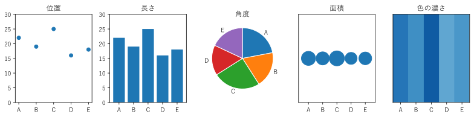
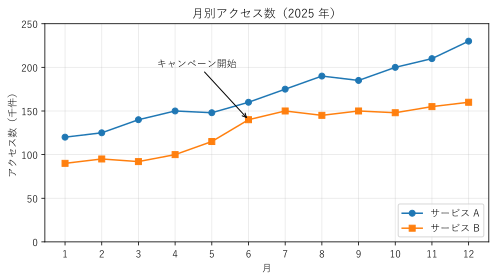
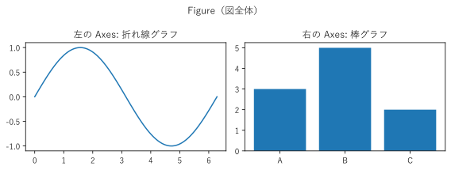
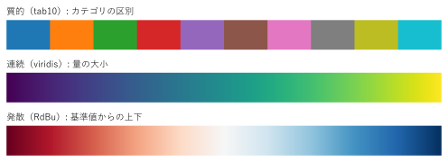

第 2 章 可視化の基礎
グラフを選ぶには、データがどのような種類の値なのか、そしてその値を図のどの性質（位置、長さ、色など）で表すのかを考える必要がある。この章では、第 I 部全体で使う基礎として、データの型、視覚変数、グラフの構成要素、matplotlib の基本的な使い方、色の使い方を説明する。
データの型
量的データは、数値として大小や差に意味がある値である。身長、応答時間、売上などが該当する。小数を含む任意の値を取る連続データと、件数のように整数の値を取る離散データがある。
質的データは、種類や順位を表す値である。部署名や製品名のように区別だけを表すものと、「満足」「やや満足」のように順序を持つものがある。カテゴリデータとも呼ぶ。
さらに細かく、値に対して意味のある演算によって、4 つの尺度水準に分ける考え方がある [Stevens1946]。
尺度 |
意味のある演算 |
例 |
表すのに向く視覚変数 |
|---|---|---|---|
名義尺度 |
等しいかどうか |
部署名、製品名、OS の種類 |
色相、形、位置（区画） |
順序尺度 |
上の演算と大小の比較 |
満足度（5 段階）、順位 |
位置、色の濃さ |
間隔尺度 |
上の演算と差 |
摂氏の温度、西暦年 |
位置 |
比例尺度 |
上の演算と比 |
長さ、重さ、応答時間、件数 |
位置、長さ、面積 |
名義尺度と順序尺度は質的データ、間隔尺度と比例尺度は量的データにあたる。間隔尺度と比例尺度の違いは、値 0 が「何もない」ことを意味するかどうかである。摂氏 0 度は温度がないことを意味しないので、「20 度は 10 度の 2 倍暑い」とはいえない。一方、応答時間の 0 ミリ秒は時間がかからないことを意味するので、「200 ミリ秒は 100 ミリ秒の 2 倍遅い」といえる。この違いは、第 3 章で説明する「棒グラフの軸を 0 から始めるべきか」という問題に関係する。
視覚変数
グラフは、データの値を、図形の位置、長さ、角度、面積、色といった性質に対応付けて描く。この性質を視覚変数という [Bertin1983]。
視覚変数によって、値の読み取りやすさは異なる。図 2 は、同じ 5 つの値（22、19、25、16、18）を 5 種類の視覚変数で表したものである。

図 2 同じ 5 つの値を、異なる視覚変数で表した図
位置と長さでは、A と E の大小や、C が最大であることがすぐに分かる。角度（円グラフ）、面積、色の濃さでは、値の近い A、B、E の大小を判断するのは難しい。
Cleveland と McGill は、実験によって、人が値を正確に読み取れる視覚変数の順序を調べた [Cleveland1984]。おおむね次の順に正確である。
共通の軸に沿った位置（散布図、ドットプロット）
共通の軸を持たない位置
長さ（棒グラフ）
角度、傾き（円グラフ）
面積（バブルチャート）
体積、色の濃さ、彩度
このことから、正確な比較が必要な量的データは、まず位置や長さで表すのがよい。色や面積は、補助的な情報や、おおまかな傾向を表すのに使う。一方、質的データ（名義尺度）の区別には、大小の印象を与えない色相や形が向いている。
19def create_figure() -> Figure:
20 """5 種類の視覚変数で同じ値を表した図を描く."""
21 fig, axes = plt.subplots(1, 5, figsize=(11, 2.8))
22 positions = np.arange(len(VALUES))
23
24 # 位置: 共通の軸の上の点の位置
25 ax = axes[0]
26 ax.scatter(positions, VALUES, color="C0")
27 ax.set_ylim(0, 30)
28 ax.set_title("位置")
29
30 # 長さ: 棒の長さ
31 ax = axes[1]
32 ax.bar(positions, VALUES, color="C0")
33 ax.set_ylim(0, 30)
34 ax.set_title("長さ")
35
36 # 角度: 円グラフの扇形の角度
37 ax = axes[2]
38 ax.pie(VALUES, labels=LABELS, startangle=90, counterclock=False,
39 wedgeprops={"edgecolor": "white"})
40 ax.set_title("角度")
41
42 # 面積: 円の面積
43 ax = axes[3]
44 ax.scatter(positions, np.zeros_like(VALUES), s=VALUES * 25, color="C0")
45 ax.set_xlim(-0.7, 4.7)
46 ax.set_ylim(-1, 1)
47 ax.set_yticks([])
48 ax.set_title("面積")
49
50 # 色の濃さ: 同じ大きさのマスの濃さ
51 ax = axes[4]
52 ax.imshow(VALUES.reshape(1, -1), cmap="Blues", vmin=0, vmax=30,
53 aspect="auto")
54 ax.set_yticks([])
55 ax.set_title("色の濃さ")
56
57 for ax in (axes[0], axes[1], axes[3], axes[4]):
58 ax.set_xticks(positions, LABELS)
59 fig.tight_layout()
60 return fig
サンプルの全体：ch02_visual_channels.py
グラフの構成要素
伝達のためのグラフには、データを描いた線や点のほかに、読み手がグラフを正しく読むための要素が必要である（図 3）。

図 3 グラフの主な構成要素を付けた折れ線グラフ
要素 |
役割 |
|---|---|
タイトル |
何のグラフかを示す。対象と期間（「月別アクセス数（2025 年）」）を含めると誤解が少ない。 |
軸ラベル |
軸が表す量と単位を示す。単位のない軸ラベルは、読み手に値の意味を推測させることになる。 |
値を読み取るための基準を示す。補助線（グリッド）は、値を読む必要がある場合に薄く引く。 |
|
色や形が何を表すかを示す。系列が 1 つだけなら不要である。 |
|
注釈 |
特に伝えたい点（キャンペーンの開始、障害の発生など）を示す。 |
22def create_figure() -> Figure:
23 """構成要素をそろえた折れ線グラフを描く."""
24 fig, ax = plt.subplots(figsize=(7, 4))
25 ax.plot(MONTHS, SERVICE_A, marker="o", label="サービス A")
26 ax.plot(MONTHS, SERVICE_B, marker="s", label="サービス B")
27
28 ax.set_title("月別アクセス数（2025 年）") # タイトル
29 ax.set_xlabel("月") # 横軸のラベル
30 ax.set_ylabel("アクセス数（千件）") # 縦軸のラベル（単位付き）
31 ax.set_xticks(MONTHS) # 目盛り
32 ax.set_ylim(0, 250)
33 ax.grid(alpha=0.3) # 補助線
34 ax.legend(loc="lower right") # 凡例
35 ax.annotate("キャンペーン開始", # 注釈
36 xy=(6, 140), xytext=(3.5, 200),
37 arrowprops={"arrowstyle": "->"})
38 fig.tight_layout()
39 return fig
サンプルの全体：ch02_anatomy.py
matplotlib の基本構造
本書のチャートは matplotlib で描く。matplotlib の図は、図全体を表す Figure と、その中のグラフ領域を表す Axes からなる（図 4）。1 つの Figure に複数の Axes を並べることができる。

図 4 1 つの Figure に 2 つの Axes を並べた図
16def create_figure() -> Figure:
17 """1 行 2 列の Axes を持つ Figure を作る."""
18 fig, (ax_left, ax_right) = plt.subplots(1, 2, figsize=(8, 3))
19
20 x = np.linspace(0, 2 * np.pi, 100)
21 ax_left.plot(x, np.sin(x))
22 ax_left.set_title("左の Axes: 折れ線グラフ")
23
24 ax_right.bar(["A", "B", "C"], [3, 5, 2])
25 ax_right.set_title("右の Axes: 棒グラフ")
26
27 fig.suptitle("Figure（図全体）")
28 fig.tight_layout()
29 return fig
plt.subplots(1, 2) は、1 行 2 列の Axes を持つ Figure を作り、Figure と Axes の配列を返す。以降は ax_left.plot() のように、Axes のメソッドでグラフを描き、タイトルや軸ラベルを設定する。
matplotlib には、plt.plot() のように「現在の Axes」に描く関数もある。手軽だが、複数の Axes を扱うときにどこに描いているかが分かりにくくなる。本書では、Axes のメソッドを明示的に呼び出す書き方に統一する。
サンプルの全体：ch02_figure_axes.py
色の使い方
色は、グラフの中でカテゴリを区別したり、量を表したりするのに使う。値と色の対応をカラーマップという。カラーマップには、目的に応じて 3 つの種類がある（図 5）。

図 5 カラーマップの 3 つの種類
種類 |
用途 |
例 |
|---|---|---|
質的 |
名義尺度のカテゴリを区別する。色の間に大小の印象がないよう、明るさの近い異なる色相を並べる。 |
部署ごとの売上、製品ごとの折れ線 |
連続 |
量の大小を表す。明るさが値の順に一様に変わる。 |
人口密度、件数のヒートマップ |
発散 |
基準値（0 や平均）からの上下を表す。基準値を明るい色にし、両側に異なる色相を割り当てる。 |
相関係数、前年比の増減 |
色を使うときは、次の点に注意する。
質的カラーマップで区別しやすい色の数は、7 から 10 程度までである。それより多いカテゴリは、まとめるか、別の表し方を考える。
色覚には個人差がある。赤と緑の区別に頼らない配色にし、必要に応じて線の種類や点の形、ラベルを併用する。
虹色のカラーマップ（jet など）は、連続データには向かない。理由は第 14 章で説明する。
22def create_figure() -> Figure:
23 """3 種類のカラーマップを帯として並べる."""
24 fig, axes = plt.subplots(3, 1, figsize=(7, 2.6))
25 for ax, (title, name, count) in zip(axes, COLORMAPS):
26 gradient = np.linspace(0, 1, count).reshape(1, -1)
27 ax.imshow(gradient, cmap=plt.get_cmap(name, count), aspect="auto")
28 ax.set_title(title, loc="left", fontsize=10)
29 ax.set_axis_off()
30 fig.tight_layout()
31 return fig
サンプルの全体：ch02_colormaps.py
まとめ
データの値は、量的データと質的データに分けられる。尺度水準によって、意味のある演算と、向いている表し方が異なる。
視覚変数のうち、位置と長さは値を正確に読み取りやすい。角度、面積、色の濃さは不正確になりやすい。
伝達のためのグラフには、タイトル、単位付きの軸ラベル、目盛り、凡例、注釈を付ける。
カラーマップは、質的、連続、発散の 3 種類を目的に応じて使い分ける。